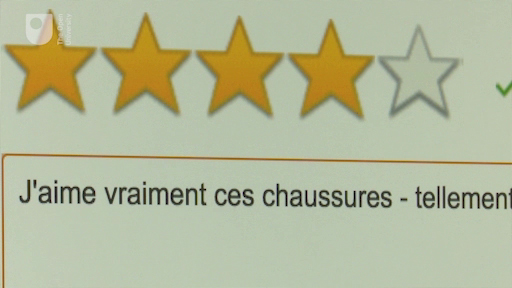
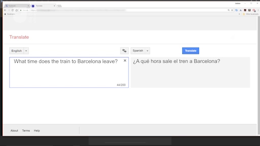

2 Resources for language learning: classification¶
There is a wealth of resources available both in physical formats and online: bookshops (both high street and online) and sometimes large libraries stock books, CDs, DVDs, and newspapers in other languages. They may also stock dictionaries, grammar books and publications about the culture and history of the areas where your target language is spoken.
Online resources available include newspapers and websites from media outlets of the areas where your target language is spoken, which often offer text, audio and video streams either as websites or apps, as well as sites dedicated to any number of topics which you may find interesting to read in the target language. There are also websites and apps produced specifically for language learners.
We classify language learning resources as follows:
those that are primarily designed as language learning tools
those that are primarily designed for native speakers
dictionaries and translators.
2.1 Resources: language-learning tools¶
Watch the following video in which the first of these different categories of resources are discussed.
FERNANDO: There are many resources available that have been designed primarily as a language-learning materials. These can be divided into those that offer full language-learning solutions and those that focus on one skill in particular. Full language-learning packages include self-study courses that come with books, audio, and video materials. They offer a variety of grammar explanations, texts, and media with exercises.; Similar online propositions also exist in several formats, such as podcasts, websites, and apps, including well-known providers such as Duolingo or Busuu, to name but two. Some of these also offer opportunities for interaction with other students and native speakers, as well as support from communities of learners. Many of these offer some content for free, but require a subscription to access full content.; The second main group of resources designed for language learning are those that offer activities to develop different areas of language, such as grammar, vocabulary, reading, writing, listening, and speaking. Again, many are available in traditional format, but there are also podcasts, websites, and apps available for these purposes.; Breaking it down into different areas, we find grammar resources that provide grammar drills, often providing lots of repeated practise. These can be very useful to practise verb forms, for example. For vocabulary, there are some software packages that provide flashcards that can help you revise words that you want to learn. These range from basic designs that provide a word on one side and its translation on the other to more advanced designs that offer images and sound. Some of these also allow you to create your own cards.; To practise reading, there are graded readers and stories written in simplified language, and they also often provide a glossary to help you understand. To support your writing, there are resources to help with spelling and also writing characters in languages that use different types of script, for instance. Then there are resources that help develop your writing skills, and some online services provide peer support from native speakers who can correct your writing.; You will also find resources that focus on listening, including using audio with transcripts and vice versa, texts with a read-along audio track, and pronunciation guides with exercises to improve your pronunciation. There are websites and apps that focus on providing opportunities to speak and interact with teachers, native speakers, or fellow language learners, such as italki, HelloTalk, and Tandem. They match language learners with partners or tutors for text, voice, and video interaction, either in real time or asynchronously.; |
 Have you tried these types of resource before? Full learning packages are particularly useful to learners who are at beginner and intermediate levels, as they offer ways to practise the language in fairly controlled environments, usually presented by clearly stated levels of difficulty. It’s a good idea for the complete beginner to start with a book (with audio) that will offer such approach. The resources available for separate
skills can vary in terms of quality and support they offer, but all of them can provide ways of practising your target language. You may want to browse your local library and bookshops or do online searches to find relevant materials for you.
Have you tried these types of resource before? Full learning packages are particularly useful to learners who are at beginner and intermediate levels, as they offer ways to practise the language in fairly controlled environments, usually presented by clearly stated levels of difficulty. It’s a good idea for the complete beginner to start with a book (with audio) that will offer such approach. The resources available for separate
skills can vary in terms of quality and support they offer, but all of them can provide ways of practising your target language. You may want to browse your local library and bookshops or do online searches to find relevant materials for you.
2.2 Resources: designed for native speakers¶
Watch this next video about resources not primarily designed for language learning.
FERNANDO:As well as resources designed for language learners, there are many materials available that have been designed primarily for native speakers of the language but can be very useful to language learners. Learners at beginner level can try these types of resource and find them useful, although they’re usually beyond the scope of the language they know at beginner stage. These types of resource are usually better suited for intermediate and more proficient learners, who may find it’s a way of practicing the language they know and expand it outside or after formal tuition.; Texts in the target language are relatively easy to find for most languages. These include newspapers, blogs, and content on just about any subject in the shape of magazines, books, comic books, e-books, or websites. Similarly, there is a wealth of audiovisual material available to language learners. Music, television programmes, and films can be obtained from shops and libraries or streamed and rented from a variety of distributors.; Watching a film in your target language with subtitles in your own language will help you to get used to the sounds of the language without compromising your understanding. They’re also an excellent way to learn about the culture and habits of the target language areas they’re set in. You may wish to watch them again with subtitles in the target language, as you already know the plot and can focus more on the language. The subtitles often help you to hear better, as you can read the words as the dialogue is being spoken.; Radio and music are a way of enjoying the sounds of the language. You can have them on and just let the sounds wash over you without focusing on understanding what is being said. There are many podcasts available in different languages from radio and TV stations, as well as organisations and individuals, which you can download and listen to as a focused activity, or simply as you commute, exercise, or carry out chores. You can also find a large amount of material on video and streaming services such as YouTube or Vimeo.; You can also practise your writing by commenting or leaving reviews on those sites that offer that possibility. Whether you comment on a picture on Instagram or Flickr using a word or two, leave a review of a book or film on an online store, or add your thoughts to the comments section of an online newspaper article, your views will be of interest to many, as they will provide a different perspective to those left by native speakers.; A way of practicing your speaking skills is to produce your own content for sites such as YouTube or podcast aggregators. Although this may seem scary at first, the more advanced language learners will find this a way of interacting with target-language speakers. Social media platforms such as Facebook, Instagram, or Twitter will allow you to produce short texts or media and interact with people all over the world.; |
 A very useful aspect of these types of resources is that they can cater to all tastes and help you personalise your learning. Looking for equivalents in your target language of the type of material you like to read, watch or listen to in your own language will mean that you can expand your vocabulary and knowledge of your favourite subjects and improve your language in those areas at the same time. Whether you like current affairs, comic-books, style magazines, history, cinema: all these and many more are catered for.
Check nearby or online bookshops for materials available. If you are a member of a steaming or rental film provider, check whether they carry films and TV programmes in the language you are learning.
Laura says:¶
I like to watch programmes with subtitles in the target language, or turn them off completely, depending on how I feel. I also sometimes change the audio to watch English-language shows with Spanish dubbing.
2.3 Resources: dictionaries and translators¶
Now watch this video about resources for language learning: dictionaries and translators.
FERNANDO : We classify dictionaries and translators separately from other resources, as they are designed for both language learners and people who may not speak the language or be interested in learning it at all and just want to look up a word. Every language learner should have access to a good bilingual dictionary regardless of their language level, either in print or online, such as words reference or reversal. More advanced learners should aim to use both bilingual and monolingual dictionary like those that native speakers use, which provide definitions of words in the target language rather than translations into their own language. As well as the obvious use of looking of the meaning of words, your dictionary can help in a number of other ways.; Entries in dictionaries provide information about the category of word that you’re looking up, whether it’s a verb, noun, adjective, adverb. This can be very useful when trying to understand the meaning. Most dictionaries also provide synonyms, which can help you make your writing more varied. They also include the phonetic representation of the word, which will help you pronounce it.; Good dictionaries also provide examples of the words used in context. Online dictionaries sometimes have links to audio files with the pronunciation too. And dictionary apps and those that can be installed in e-book readers can sync with texts so that you can click on a word in the text you are reading to find its meaning.; Online translators are another type of tool available to language learners. These offer machine translations with the option of entering text or speaking. And it will produce a translation, sometimes also with its pronunciation. The best known and most used online translator is Google translate. You can look up single words and online translators will offer a good result. Although you should be aware of the different meanings that the same word can have. Although opposition to the use of translation software has been raised by some language teachers. Realistically, these pieces of software remain the first place where many language learners turn to when composing texts in the target language.; The machine translation algorithms have improved vastly in recent years. But translations can be erroneous, especially when sentences are looked up without context. Some language combinations work better than others, as these tools tend to rely on available texts and translations of sources. So for example, whereas the English, French or Spanish, English combination tends to provide very good results, other combinations such as Hungarian, English may produce results that are not as accurate.; When using online translators, try to use simple sentences and avoid colloquial expressions. Never take the translation offered as the correct translation. And always evaluate the text provided for possible errors. A way of checking the translation is to use the translator to translate the translation provided back to the original language.; |

Laura says:¶
When I started learning Spanish, I was not sure how to choose the right dictionary. Some are marketed for beginners, and I started off with one of those when I first started learning Spanish, and then spent a little more money later on, and bought myself a more comprehensive dictionary.
Activity 1 Trying out online translators¶
Timing: Allow about 20 minutes
Question¶
Go to an online newspaper or news organisation in your target language and copy a paragraph of text from a news item. Then go to an online translator, such as Google Translate, and paste the text onto the translation box to provide a translation into your main language. Look at the results. Does the text make sense?
Discussion¶
It is probably good enough to enable you to understand what the text is about, but it is probably not 100 per cent grammatically correct. Most likely there will be some sentences that convey the meaning effectively, but may sound slightly odd, as if someone who isn’t familiar with the language style wrote them. So if you use an online translator to translate a text you have written in your main language into your target language, don’t expect it to be totally correct either.
Laura says:¶
I think that when you start learning a language, it’s easy to fall into the trap of using online translators without realising that the translation often contains mistakes, so this is a useful exercise to show why you must be careful.